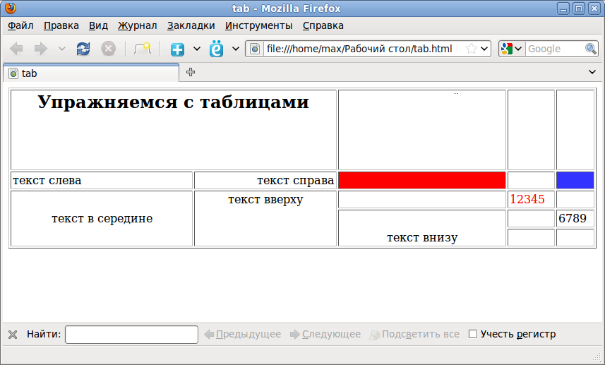
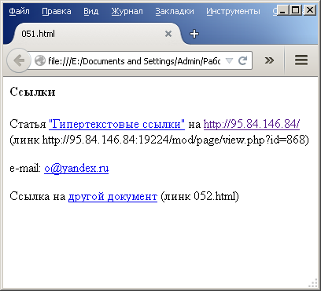
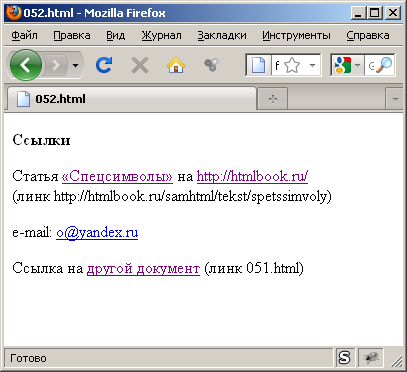

Создать файл, в котором использованы все упомянутые теги, сохранить как .html Упомянутые теги: вывод текста жирным шрифтом, курсивом, жирным курсивом заголовки 1-6 уровня горизонтальная линейка (может быть цветной и занимать не всю ширину страницы) цвет фона страницы выравнивание текста абзаца по центру, слева и справа страницы принудительный перенос строки внутри параграфа (например, стихотворение) комментарий
<html> <head> <title>Задание 1<⁄title> <⁄head> <body bgcolor="E2FBFF"> <h1> Это заголовок 1 уровня<⁄h1> <h2> А это заголовок 2 уровня<⁄h2> <h3> Ещё можно делать заголовки 3 уровня<⁄h3> <h4> 4 уровень тоже прикольный, но уже мелковато<⁄h4> <h5> Кажется, 5 уровней заголовков - уже пербор<⁄h5> <h6> Мы спустились на дно<⁄h6> <p><b> Хех, я могу cделать этот текст жирным.<⁄b> <i>Или написать курсивом<⁄i>, <i><b>Почему бы не использовать несколько тегов сразу?<⁄b><⁄i><⁄p> <hr align="center" width="300" color="368291" ⁄> <p> Нравится <br> линия? <br> Обращаю внимание <br> этот текст <br> разор- <br> ван<⁄p> <p> Кстати, вы заметили фон станицы?<⁄p> <p align="left"> Этот текст находится слева<⁄p> <p align="center"> А этот по центру<⁄p> <p align="right"> Можно ещё выровнять по правому краю<⁄p> <!-- Фух, вроде, всё сделала --> <⁄body> <⁄html>
Сверстать страницу по образцу
<html> <head> <title>Задание 2<⁄title> <⁄head> <body> <table border="1"> <tr> <th colspan="2" valign="top" width="800px" height="120px"><h1> Упражняемся с таблицами<⁄h1><⁄th> <td width="350px"><⁄td> <td width="125px"><⁄td> <td width="125px"><⁄td> <⁄tr> <tr> <td align="left" height="30px">текст слева<⁄td> <td align="right">текст справа<⁄td> <td bgcolor="red"> <⁄td> <td><⁄td> <td bgcolor="blue"> <⁄td> <⁄tr> <tr> <td rowspan="3" align="center" height="90px">текст в середине<⁄td> <td rowspan="3" valign="top" align="center">текст вверху<⁄td> <td><⁄td> <td height="30px"><font color="red">12345<⁄font><⁄td> <td><⁄td> <⁄tr> <tr> <td rowspan="2" valign="bottom" align="center" height="60px">текст внизу<⁄td> <td height="30px"><⁄td> <td height="30px">6789<⁄td> <⁄tr> <tr> <td><⁄td> <td><⁄td> <⁄tr> <⁄table> <⁄body> <⁄html>
Сделать два html-документа, ссылающихся друг на друга, на другие html-страницы и содержащие e-mail-ссылку точно по образцу:
 Соответствующие адреса: Статья "Гипертекстовые ссылки": https:⁄⁄ 95.84.146.84:19242 ⁄mod⁄page⁄view.php?id=2208 Сайт интернет-класса нашего: https:⁄⁄ 95.84.146.84:19242 ⁄ Статья "Спецсимволы": http:⁄⁄htmlbook.ru⁄samhtml⁄tekst⁄spetssimvoly Сайт htmlbook: http:⁄⁄htmlbook.ru⁄
<html> <head> <title>name1<⁄title> <⁄head> <body> <p><b> Ссылки<⁄b><⁄p> <p>Статья <a href="https:⁄⁄ 95.84.146.84:19242 ⁄mod⁄page⁄view.php?id=2208">"Гиппертектовые ссылки"<⁄a> на <a href="https:⁄⁄ 95.84.146.84:19242 ⁄">http:⁄⁄ 95.84.146.84 ⁄<⁄a><br>(линк https:⁄⁄ 95.84.146.84:19242 ⁄mod⁄page⁄view.php?id=868)<⁄p> <p>email: <a href="mailto:o@yandex.ru">o@yandex.ru<⁄a><⁄p> <p>Ссылка на <a href="name2.html">другой документ<⁄a> (линк name2.html)<⁄p> <⁄body> <⁄html> <html> <head> <title>name2<⁄title> <⁄head> <body> <p><b> Ссылки<⁄b><⁄p> <p>Статья <a href="http:⁄⁄htmlbook.ru⁄samhtml⁄tekst⁄spetssimvoly">« Спецсимволы » <⁄a>на <a href="http:⁄⁄htmlbook.ru⁄">http:⁄⁄htmlbook.ru⁄<⁄a><br>(линк http:⁄⁄htmlbook.ru⁄samhtml⁄tekst⁄spetssimvoly)<⁄p> <p>email: <a href="mailto:o@yandex.ru">o@yandex.ru<⁄a><⁄p> <p>Ссылка на <a href="name1.html">другой документ<⁄a> (линк name1.html)<⁄p> <⁄body> <⁄html>